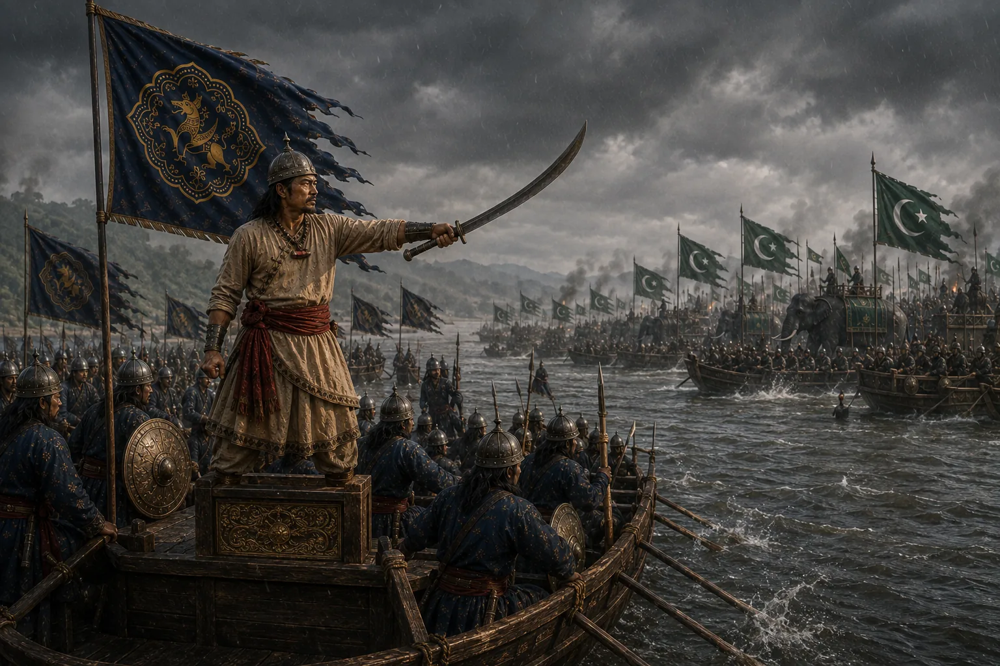
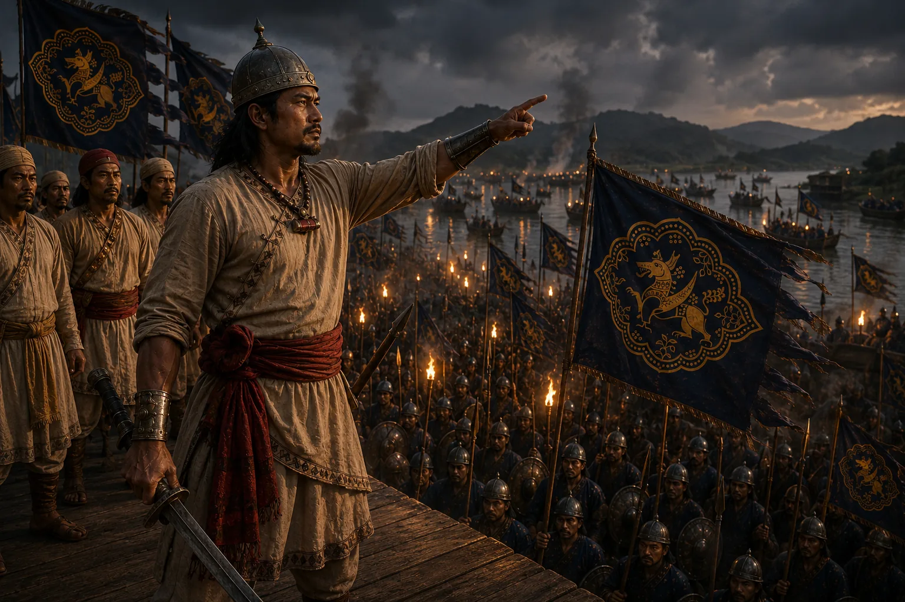
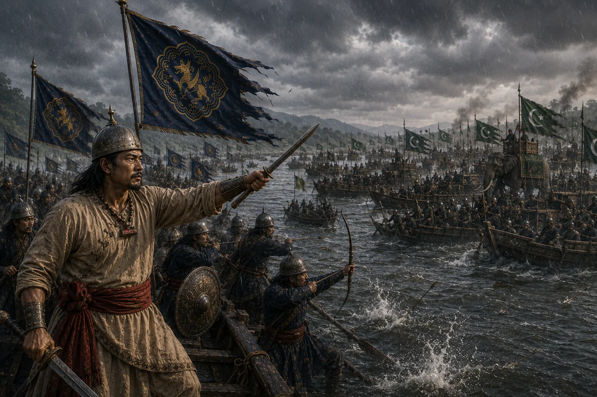

নিজৰ মোমাইক
মৃত্যুদণ্ড
মৃত্যুদণ্ড
He sentenced his own uncle to death.
কিয়?
Why?

১৬৭১
মোগল বাহিনী
আহি আছে
1671. The Mughal army is coming.

এটা ৰাতিৰ ভিতৰত
গড় বান্ধিব লাগিব
One night to raise the rampart.
দায়িত্ব আছিল
মোমাইৰ
কাম
আধৰুৱা
His uncle was in charge. The work lay half-done.

লাচিত আহিল।
Then Lachit arrived.
দেশতকৈ মোমাই
ডাঙৰ নহয়
“My uncle is not greater than my country.”
— LACHIT BORPHUKAN
ৰাতিপুৱালৈ
গড় সম্পূৰ্ণ
By dawn, the rampart stood.

১৬৭১
মোগল পৰাস্ত
শৰাইঘাট
Saraighat, 1671. The Mughals were defeated.
LACHIT BORPHUKAN
লাচিত বৰফুকন
আহোম সেনাপতি · ১৬২২–১৬৭২
নিজৰ মোমাইক
বুৰঞ্জী·পাত ১৬৭১
𑜱𑜶𑜷𑜱